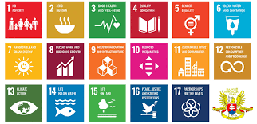

Se basa en la integracion de la proteccion ambiental con el desarrollo economico y social, a traves de instrumentos como la
planificacion ambiental estrategica, la creacion de marcos normativos internacionales y nacionales, y la participacion ciudadana.
Organizaciones como el Programa de las Naciones Unidas para el Medio Ambiente (PNUMA) lideran el desarrollo de acuerdos
multilaterales y fortalecen las capacidades institucionales a nivel global. En cuanto a la planificacion nacional, se recurre a
herramientas como los ordenamientos ecologicos y los planes de gestion ambiental, que involucran analisis, establecimiento de metas,
programas de accion y monitoreo.
Principios y objetivos
Integracion: Unificar la planeacion publica con la problematica ambiental para guiar la toma de decisiones hacia un desarrollo sostenible.
Derecho humano: Asegurar el derecho a un medio ambiente sano, considerando tanto las obligaciones del estado como de los ciudadanos y
las empresas, especialmente en relacion con el cambio climatico.
Soberania y responsabilidad: Reconocer los derechos soberanos de los estados sobre sus recursos, pero tambien la responsabilidad de no
causar heridas ambientales en otras jurisdicciones.
Mecanismos y herramientas
Instrumentos internacionales: El PNUMA facilita plataformas para crear acuerdos multilaterales y directrices sobre temas ambientales,
como la Declaracion de Rio.
Planes de gestion ambiental: Proceso que incluye analisis de impacto, establecimiento de objetivos, desarrollo de programas de accion,
capacitacion, control, monitoreo y mejora continua.
Ordenamiento ecologico: Instrumento que regula el uso de los recursos naturales mediante un analisis tecnico-participativo para
determinar la aptitud del territorio, como se hace en Mexico.
Marco normativo nacional: Cada pais desarrolla sus propias leyes, como la Ley General de Equilibrio Ecologico en Mexico o la Ley de
Cambio Climatico en Espania, para regular aspectos especificos como la contaminacion, la biodiversidad o las energias renovables.
Proceso de planificacion
Analisis de informacion: Recopilacion de datos actualizados y la participacion de la sociedad y los sectores productivos para entender
la problematica ambiental.
Definicion de politicas: Establecimiento de politicas y programas de accion a largo plazo.
Participacion ciudadana: Integrar la opinion de la poblacion mediante mecanismos de participacion ciudadana para la elaboracion y
evaluacion de planes y programas.
Monitoreo y evaluacion: Supervisar el cumplimiento de los objetivos y la eficiencia de las politicas implementadas.
Agenda global
Agenda 2030: El desarrollo de la legislacion ambiental se alinea con la Agenda 2030 para el Desarrollo Sostenible, que aborda la
proteccion del medio ambiente como un fin transversal presente en la mayoria de sus objetivos, conocido como la "P de Planeta".
